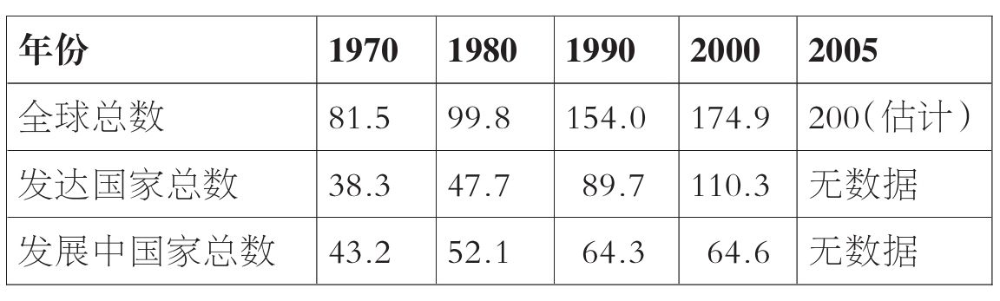
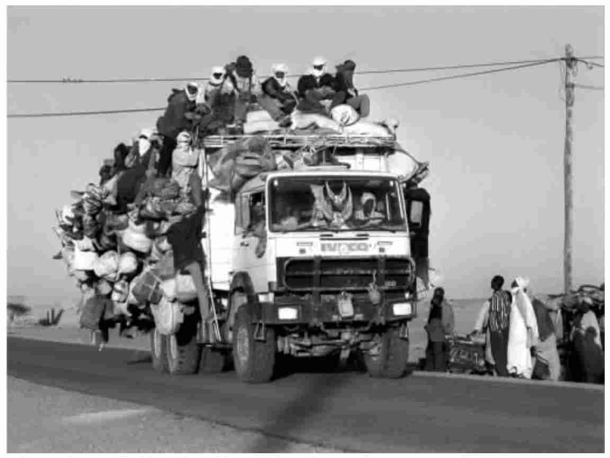

当前，国际移民比以往任何时候都要多，而且在可预见的将来，其数量必定还会增加。世界各国正在且将会继续受其影响。移民与其他包括发展、贫困及人权在内的重要的全球性问题有着不可分割的联系。移民往往是那些最具创业才能、最有活力的社会成员。回顾历史，移民在促进经济、建设国家及丰富文化等方面都起到了支柱性作用。同时，移民也带来了重大挑战。有些移民遭受剥削，人权受到侵犯，在与目的地国的融合过程中也会面临困难；此外，移民会使来源国丧失重要的技术人才。基于上述及其他一些原因，移民问题的确很重要。
国际移民简史
移民的历史可以一直追溯到东非大裂谷的人类先祖。生活在公元前一百五十万年到公元前五千年之间的直立人及智人最先从东非大裂谷迁徙到欧洲，之后又迁入其他大陆。古希腊的殖民以及古罗马的扩张都是凭借移民才得以实现的，欧洲之外的重要迁移也与美索不达米亚帝国、印加帝国、印度帝国以及中国的周王朝不无关系。历史早期的其他重要移民包括维京人的迁移。
图1 美墨边境是全球被穿越得最为频繁的国际边境——每年穿越该边境的人数约有三亿五千万
移民历史学家罗宾·科恩认为，在较近的历史时期，即过去两三百年间，出现了一连串重大移民时期或移民事件。十八和十九世纪最主要的移民事件当数奴隶的被迫迁移。主要来自西非的约一千二百万人被迫迁移到新大陆，少数人越过了印度洋和地中海。这次移民之所以如此重要，除其规模巨大外，原因之一就是它对奴隶的后裔尤其是非裔美国人仍有重要影响。奴隶制瓦解之后，大批的契约劳工从中国、印度以及日本涌入各欧洲大国继续在种植园劳作，仅来自印度的劳工就约有一百五十万之巨。
欧洲的扩张也离不开欧洲人大规模的自愿外迁，向殖民地、自治领及南北美洲的迁移尤其突出。英国、荷兰、西班牙及法国等商业大国，均鼓励国民到海外定居，其中不仅有工人，还有农民、持不同政见的军人、罪犯及孤儿。与扩张相关的移民活动随着十九世纪末反殖民运动的兴起而基本告终。事实上，在其后约五十年间还出现了重返欧洲的重大回流，如涌回法国的所谓黑脚杆（居于阿尔及利亚的法国人）。
下一个移民时期的到来是以美国作为工业强国的兴起为标志的。从十九世纪五十年代直到二十世纪三十年代的经济大萧条，数以百万计的工人从经济停滞的地区，从北欧、东欧及南欧国家源源不断地涌入美国，更不用说还有逃离饥荒的爱尔兰人。曾有大约一千二百万这类移民在纽约港的埃利斯岛登陆接受移民检查。
其后的重大移民时期是在第二次世界大战之后：为维持迅速繁荣起来的战后经济，欧洲、北美及澳大利亚都需要大量的劳动力。例如，在这一时期，许多土耳其移民到德国工作，不少北非人到法国及比利时工作。也正是在这一时期，约一百万英国人，即所谓的十镑移民，迁移到了澳大利亚。作为吸引新移民的一项措施，澳大利亚政府为他们支付路费并付给他们每人十英镑的赠金。同样是在这一时期，世界其他地区非殖民化对移民的影响仍在继续，最主要的是1947年印巴分治后数以百万计的印度教徒及穆斯林的迁移，以及以色列建国后犹太人和巴勒斯坦人的迁移。
尽管国际劳工移民潮在美国一直持续到二十世纪九十年代初，但在欧洲，到二十世纪七十年代时国际劳工移民潮就已告一段落。全球经济的发动机已经开始明显地向亚洲转移，但与此极不相符的是，亚洲的劳工移民仍在增长。稍后，在本书中我们会看到在过去二十年左右的时间里，寻求庇护者、难民及非常规移民向工业化国家的迁移已变得越来越重要。
对国际移民近期发展的概述不可能无所不包，而只能有所取舍，目的并不仅仅在于强调移民不是一个新现象，还在于确定本书中将反复出现的主题。移民问题与革命、战争以及大国兴衰等全球重大事件相关；移民问题与经济扩张、国家创建以及政治改革等重大变化相关；移民问题也同冲突、迫害、权利剥夺等重大问题不无关系。移民问题自古以来就很重要，当今亦是如此。
国际移民的维度及发展趋势
联合国将在常住国以外滞留至少一年的人定义为国际移民。根据这一定义，联合国估计2005年全球共有大约两亿国际移民，其中包括约九百万难民。这差不多相当于世界第五大人口大国巴西的人口。现在全球每三十五个人中就有一个是国际移民。
换句话说，现在全球人口中只有百分之三属于国际移民。但是移民的影响绝不仅限于移民本人——本书稍后将加以详细说明。移民对国内外的社会、经济及政治都有着重要的影响。颇具影响的《移民时代》（2003）一书的作者斯蒂芬·卡斯尔斯和马克·米勒写道：
在仅仅二十五年里，国际移民的数量翻了不止一番，在二十一世纪头五年就增加了两千五百万（表1.1）。1990年以前，大多数国际移民生活在发展中国家；而今天大多数国际移民生活在发达国家，且比例正在增长。1998年到2000年之间，发展中国家的移民从五千两百万增加到六千五百万，与之相比，发达国家的移民则从四千八百万增至一亿一千万。2000年，欧洲移民约六千万，亚洲四千四百万，北美洲四千一百万，非洲一千六百万，而拉丁美洲和澳大利亚总共才六百万。2000年约百分之二十的移民（三千五百万）生活在美国。俄罗斯是当年最为重要的第二大移民侨居国，当年约接纳移民一千三百万，几乎是全球移民总数的百分之八。德国、乌克兰以及印度的排名紧随其后，各在六百万到七百万之间。
表1.1 国际移民数量分布一览（按世界区域划分，时间跨度从1970年到2005年，单位为百万）

要说清国际移民的最大来源国是哪些就困难多了，这主要是因为来源国一般不统计在外侨民的数量。尽管如此，据估计，当前旅居海外的华人至少有三千五百万，印度人有两千万，菲律宾人有八百万。
上述事实和数据传达了一个强烈的信息：当今国际移民影响着全球每一个角落。全球移民中，由“南”至“北”的移民比例增加了。在第三章我会说明人们从穷国迁往富国的重要原因。同时，对于区域内的重大移民活动也不可忽视。在波斯湾各国工作的亚洲移民约达五百万。据估计，南非约有两百五十万到八百万的非常规移民，几乎全都来自撒哈拉沙漠以南的非洲国家。在第六章我们会看到，发展中国家的难民比发达国家的难民要多很多。同样，每年移居英国的欧洲人也比从欧洲以外移居英国的人要多，这些欧洲人当中有不少都是因海外任职期满而重返故土的英国人。
除了国际移民的规模及不断变化的地理分布之外，至少还有三个趋势标志着当代与早先国际移民的模式及过程已是大相径庭。首先，移民中女性的比例迅速增加。2005年女性移民的数量几乎占到移民总量的百分之五十。她们当中超过一半人生活在发达国家，其余则在发展中国家。据联合国统计，2005年，欧洲、拉丁美洲、加勒比海地区、北美洲、大洋洲及前苏联的女性移民超过了男性移民。此外，尽管长久以来女性移居海外是为了与配偶相聚，但现在越来越多的女性已是独立移民。她们往往是其国内家庭的主要经济来源。
女性移民日益增多的原因有很多。原因之一是，对海外劳动力的需求越来越显现出性别倾向。这些需求集中在主要由女性从事的诸如服务、医疗保健及娱乐等行业，在较发达国家尤其如此。第二个原因是，越来越多的国家已经把家庭团聚的权利惠及移民，换句话说，它们准许移民与其配偶及儿女团聚。这里所说的配偶往往都是女性。移民来源国国内性别关系的变化也意味着女性移民较以往有更大的自主性。还有一个原因是，从事家务劳动的女性移民（亦称“女佣贸易”）、有组织的婚姻移民（亦称“邮购新娘”），以及拐卖女性从事性服务的现象都日渐增多，在亚洲尤甚。
第二个趋势是，传统上对来源国、过境国及目的地国的区分现在已经越来越模糊。今天，几乎世界上每一个国家都同时扮演着这三个角色，都有移民离境、过境及入境。或许世界上没有任何一个地方能比地中海地区更能说明来源国、过境国及目的地国三者之间的界限是何等模糊了。大约五十年前，这种区分还相当清楚。当时所有的地中海国家，不管是位于北非还是南欧，都是移民来源国，这些移民主要是去北欧工作。二十年前，随着越来越多的北非人到经济日益繁荣的南欧工作，以及与此同时有心北上工作的南欧移民的减少，南欧由移民迁出地变成了移民迁入地。今天，北非也正在由一个移民来源地向移民过境地和移民目的地转变。越来越多的移民从撒哈拉沙漠以南的非洲地区迁往利比亚、摩洛哥及突尼斯。有些人定居下来，有些人（通常是非法地）越过地中海来到南欧，在南欧又有些人定居下来，有些则继续迁至北欧。
第三个趋势是，过去几百年间重大的移民活动大多都是永久性的，而如今短期移民变得越来越重要。即便是那些在国外度过大半生的人也梦想能够重返故土，回到出生地。现在，相对而言，移民到某个国家并在那里终其一生的人已不多见。
再者，移民一次便重返故国的传统模式似乎已渐次消亡。越来越多的人一生移民数次，经常是到不同的国家或地区，其间返回祖国。国际旅行较以前便宜很多，也更为便利，因此，即使是那些长期在外的移民，回国也越来越频繁。在来源国与目的地国之间往返且在目的地国只短期居住的所谓旅居移民有着悠久的历史，如十九世纪及二十世纪初在东南亚和澳大利亚的多数中国移民即属此类。而现在，这种来回往返的移民已是规模空前，交通与通讯革命方面的发展更是促进了这类移民。

图2 一辆满载移民的卡车从尼日尔的阿加德兹开往北非
循环移民
国际移民的机遇
在人类历史上移民活动从未中止过，且影响重大。它促进了世界经济增长，对国家和社会的发展作出了贡献，同时也丰富了许多文化与文明。移民已成为最有活力、最具创业精神的社会成员。为了给自己以及子女创造新的机会，他们背井离乡，作好了冒险的准备。比如，美国经济增长史在诸多方面都可算作是移民史：安德鲁·卡内基（钢铁业）、阿道弗斯·布施（啤酒业）、塞缪尔·高德温（电影业）以及海伦娜·鲁本斯坦（化妆品业）均为移民。柯达、大西洋唱片公司、美国无线电公司、美国全国广播公司、谷歌、英特尔、Hotmail、太阳微系统、雅虎和易趣网都是由移民创办或联合创办的。
在当今世界，国际移民继续在国家、地区及全球事务中扮演着重要角色，尽管这一角色往往不被承认。在许多发展中国家，较之由富国提供的官方援助，移民寄回家的钱成为更为重要的收入来源。在有些发达国家，经济的各个领域以及许多公共服务行业已高度依赖移民劳动力，倘若这些劳动力撤走，则一夜之间就会崩溃。尽管难有实证，但人们常说，移民之于英国，价值胜过北海石油。据世界银行估算，全世界移民劳动力收入达二十万亿美元，其中绝大多数都投资在了自己所工作的国家。另有一项研究表明，美国大约一千五百万的外来劳动力给美国经济带来了超过一百亿美元的财富。移民劳动力因此被认为对经济增长作出了巨大贡献。在世界上很多地方，移民所做的不光是所在国国民不愿做的工作，而且还包括一些所在国国民无法从事的高价值活动。
移民及移民活动不光有助于经济增长，事实上，他们在社会和文化生活领域的影响或许最令人感受深刻。在世界范围内，民族、语言、风俗、宗教以及生活方式各异的人彼此之间正在形成前所未有的联系。不管承认与否，大多数社会如今至少已经或多或少具有多样性的特色。在对英国大学生授课时我经常会提到这个观点，指出在过去的二十四小时当中，他们吃的东西或者听的音乐几乎肯定是来自世界其他地方，他们所看的一流运动团队中有移民队员或是移民后裔。移民集中地出现在香港特别行政区、伦敦或者纽约这样的“国际化城市”绝非偶然。正是这样充满活力和创新精神而且高度国际化的大都会使世界上的人们、地域以及文化日益紧密地发生着联系。
国际移民的挑战
同时，倘若否认国际移民也形成了重大挑战，则未免有些天真。也许说得最多的要数移民与安全之间的联系。尤其是在“9·11”之后，认为国际移民与恐怖主义之间有着密切关系的看法已经形成。前不久马德里和伦敦的袭击事件更增强了这种看法。全球各地规模见长的非常规移民有时会被政客以及公众视为国家主权和公众安全的威胁。在不少目的地国家，当地社会越来越惧怕移民社区的出现，尤其是那些带有陌生异域文化又与极端主义和暴力有关的社区。
这些担忧不无道理，不容低估。随后几章将对其进行深入考察。同时，太多的注意力可能被放在了移民对目的地国及其所定居的社会的挑战上面了，而对那些移民本身、他们的家庭以及其身后的人民与社会所面临的挑战则关注不够。
首先应当记住，许多移民是因为别无选择才背井离乡的。2005年全球难民约有九百万，他们都是因为怕遭受迫害或死亡才离开故土的。他们的旅程一经开始就有许多移民（不仅是难民）死在途中。此外，有些移民一到目的地便发现自己陷入遭人剥削且人权受到侵犯的境地。对于那些人口贩卖的受害者来说尤其如此，他们很容易被奴役，而且往往会卷入性行业当中。家佣在雇主手下也可能会受到虐待并遭受暴力。更为普遍的是，即使已经在海外定居多年，许多移民及其子孙仍然会面对歧视和偏见。移民问题对移民本身所造成的消极影响不亚于其对目的地社会所形成的挑战。
移民问题也会对移民离之而去的社会产生重要影响。在第四章我会说明，对于那些本身就缺乏移民所具有的技能的国家，这种影响则更为深刻。受所谓人才流失影响最为严重的要数医疗行业，教育行业同样也深受影响。这种外流不仅降低了穷国提供基本服务的能力，也意味着教育及培训此类人才的公共投入付诸东流。
国际移民概述
基于本章所列的种种原因，国际移民在许多国家已经成为了政治议程上的首要问题，引得媒体大加报道并已成为广泛的公众话题。然而，就移民问题的讨论却往往难以令人满意。首先概念就不清楚，比如“寻求庇护者”、“难民”以及“非常规”或“非法”移民之类的说法经常被交替使用。引用统计数据的方式也常常让人惊恐而没有使人增进了解。正常呈现的移民状况非常有限。总之，移民问题真正的多样性及复杂性经常被忽视。
在这样的背景下，该概述旨在向读者提供解读当今主要移民问题以及吸引读者参与理性讨论所需的说明、分析及数据。作为一名讲授并研究移民及其相关问题逾十五年的学者，我自然有自己的视角和观点。但我已经试图将其置之幕后，隐而不显，以全景呈现围绕当今移民问题的讨论。此外，本书未将移民政策作为关注中心，但切题之处也引入了一些针对政策影响的评论。
试图将任何一个包含研究、著述及政治讨论的庞大领域浓缩进这么一本小书，都不可避免地需要有所选择。面对这一挑战，不同的作者自会作出不同的选择。首先值得强调的是，本书书名顾名思义，关注的正是跨越国境的移民。主要原因是，较之内部移民，以国际移民为主题的研究和著述要多得多，其业已获得的政治与媒体的关注以及公众话语也多得多。同时也必须承认，内部移民在数量上远远多于国际移民，两者之间的界限也可能并不清晰。目前，学界对内部移民的关注还远远不够。正如我们将在本书最后一章所看到的那样，内部移民有可能会决定未来国际移民的势态。
我看待国际移民问题的整体方法有三个特点。首先，国际移民问题毕竟算是真正的全球性问题，因此我尽可能以全球视角对其加以考察。但是，由于缺乏世界某些区域移民方面的研究、信息与数据，以及自身知识的欠缺，这种方式会时时受限。其次，我也尽量使用了从自己的调查得来的“活生生”的例子——这也是力求使自己的视角以移民自身经历为基础的一种途径。为了弥补自己知识方面的欠缺，我也参考了该领域一些学者业已发表的一些研究结果。最后，我使本书在结构上围绕当今国际移民中，个人认为最受关注、最为相关的那些问题，而不是不分主次，比方说，按章节分别谈论世界主要地区的移民问题。对这些问题的论述应当言简意赅，因此，笔者在书末向读者诸君提供了其他的资料来源参考，以供各位获取详细信息及分析之用。
本章已经提出了“移民问题缘何重要”这个问题，下一章将提出“何为移民”。这一章将考察对国际移民所作出的各种各样的定义、国际移民的一般分类，并思考要作出实际评估为何如此困难。同时，该章将介绍有关国家政治及公民概念变迁的讨论。第三章讨论了移民与全球化之间的关系，试图对移民现象产生的原因提供结构层面上的解释。
此后各章分别关注了一系列重大的移民问题。第四章考察了发展问题与移民问题之间的关联。发展不足会促使移民产生，而移民反过来却又会促进其家乡的发展。第五章转而论述当今最受关注的移民问题，即非常规移民（特别要指出的是，该章主张，“非常规移民”这一说法较之“非法移民”更为可取）。该章涵盖了就人口贩卖和移民偷渡现象的专门讨论。同样广受关注且又经常与非常规移民相混淆的有难民和寻求庇护者，他们将是第六章的讨论重点。全球视角在这一章尤为重要。第七章关注的是移民对目的地社会的影响这一争论不休的问题。最后，第八章探明了会影响到国际移民未来的一些主要趋势。